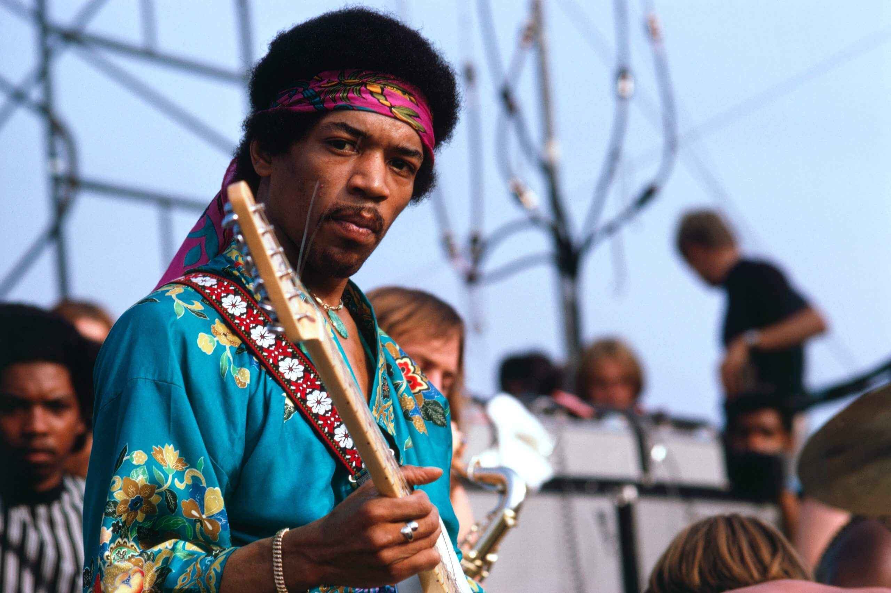

James Marshall Hendrix (nacido como Johnny Allen Hendrix) llegó a este mundo el 27 de noviembre de 1942 en Seattle, Washington. El mundo lo conocería cómo Jimi Hendrix, a pesar de su temprana muerte a los 27 años el 18 de septiembre de 1970, su talento descomunal con la guitarra lo llevaría a la inmortalidad.
google Hendrix recibió varios premios durante su vida y también de forma póstuma. En 1967, los lectores de Melody Maker le votaron como el mejor músico popular del año, en 1968, Rolling Stone lo nombró músico del año, Disc and Music Echo lo distinguió con el título de mejor músico de 1969, mientras que, en 1970 Guitar Player le otorgó el voto de mejor guitarrista del año.
The Jimi Hendrix Experience entró en el Salón de la Fama del Rock and Roll en 1992 y en el UK Music Hall of Fame en el 2005.1357 En 1999, los lectores de Rolling Stone y Guitar World le pusieron en sus listas de los músicos más importantes del siglo XX.
Hendrix ha sido influencia para diversos artistas, entre ellos: Prince, Stevie Ray Vaughan, John Frusciante de los Red Hot Chili Peppers, Joe Satriani, Kirk Hammet de Metallica y muchos más.